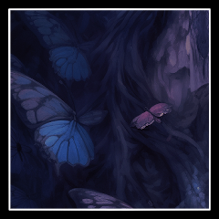
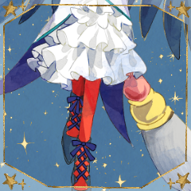
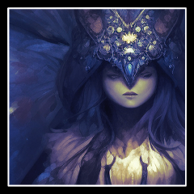
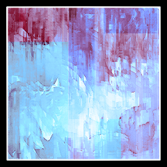
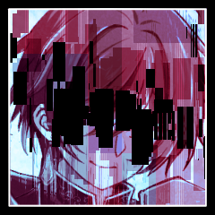

リュール
2d6+4+2>=7 猟奇 (2D6+4+2>=7) ＞ 3[2,1]+4+2 ＞ 9 ＞ 成功
リュール
c(4+2) 猟奇点+援護のダメージ c(4+2) ＞ 6
[ アンブローズ ] HP : 5 → 0
リュール
つるぎはをとめの願いと祈りを受けてひらめく。

Lost Saint-Ex
＊亡者の行動
Lost Saint-Ex
＊凶器の効果でHP回復
[ Lost Saint-Ex ] HP : 75 → 76
Lost Saint-Ex
＊まず、枯れた花輪を使用
[ Lost Saint-Ex ] 花輪 : 1 → 0
[ Lost Saint-Ex ] 残花輪R : 0 → 2
クロノス
2d6+4+2+2>=7 才覚 (2D6+4+2+2>=7) ＞ 11[5,6]+4+2+2 ＞ 19 ＞ 成功
Lost Saint-Ex
2d6+4+1>=19 愛判定(万能) (2D6+4+1>=19) ＞ 9[6,3]+4+1 ＞ 14 ＞ 失敗
リュール
2d6+4>=7 猟奇判定 (2D6+4>=7) ＞ 10[5,5]+4 ＞ 14 ＞ 成功
リュール
c(4-2) 遊撃ダメージ 猟奇-鉄壁の衣装 c(4-2) ＞ 2
[ Lost Saint-Ex ] HP : 76 → 71
リュール
c(4-2+2+1) 猟奇 鉄壁の衣装 看破 発狂 c(4-2+2+1) ＞ 5
Lost Saint-Ex
2d6+4+1-3>=7 猟奇判定(万能) (2D6+4+1-3>=7) ＞ 7[5,2]+4+1-3 ＞ 9 ＞ 成功
Lost Saint-Ex
1d6+7 威力 (1D6+7) ＞ 6[6]+7 ＞ 13
リュール
2d6+3>=7 愛 (2D6+3>=7) ＞ 7[6,1]+3 ＞ 10 ＞ 成功
リュール
c(13-3-1) ダメージ-愛軽減3-防弾コート c(13-3-1) ＞ 9
[ リュール ] HP : 25 → 16
クロノス
2d6+4+4+2>=7 才覚(お茶会) (2D6+4+4+2>=7) ＞ 8[6,2]+4+4+2 ＞ 18 ＞ 成功
Lost Saint-Ex
2d6+4+1>=18 猟奇判定(万能) (2D6+4+1>=18) ＞ 2[1,1]+4+1 ＞ 7 ＞ 失敗
Lost Saint-Ex
まあ……関係ないですね
クロノス
2d6+4+6+2>=7 才覚 (2D6+4+6+2>=7) ＞ 2[1,1]+4+6+2 ＞ 14 ＞ 成功
クロノス
2d6+4+6+2>=7 才覚 (2D6+4+6+2>=7) ＞ 5[3,2]+4+6+2 ＞ 17 ＞ 成功
Lost Saint-Ex
2d6+4+1+1>=17 愛判定(万能) (2D6+4+1+1>=17) ＞ 7[1,6]+4+1+1 ＞ 13 ＞ 失敗
Lost Saint-Ex
＊胡椒の雲 全員のHP-4
[ クロノス ] HP : 21 → 17
[ Lost Saint-Ex ] HP : 71 → 67
[ リュール ] HP : 16 → 12
[ 反対側のヲトメ ] HP : 5 → 1
[ ヲトメ ] HP : 28 → 24
Lost Saint-Ex
『さぁさ願いを叶えてさしあげましょう』
Lost Saint-Ex
『ほしいものは抱えきれない金貨と承認？』
Lost Saint-Ex
『それとも、愛するものを蘇らせる奇跡？』
Lost Saint-Ex
『あるいは、天から降り注ぎすべてを滅ぼす星の魔法？』

ヲトメ
ふるえる心がざわつく。
けれど飛び立って、王子に願いを振りまく。
リュール
＊聖餐3回分を受け、威力を3点上昇します。
[ ヲトメ ] HP : 24 → 21
反対側のヲトメ
崩れ落ちたアンブローズのかたわらで。
リュール
＊補助動作 眠り鼠のポットを使用
対象：Lost Saint-Ex
[ Lost Saint-Ex ] 封印(リ) : 0 → 2
リュール
2d6+4>=7 猟奇判定 (2D6+4>=7) ＞ 7[5,2]+4 ＞ 11 ＞ 成功
リュール
1d6+3+3 威力+聖餐3 (1D6+3+3) ＞ 3[3]+3+3 ＞ 9
リュール
＊牽制の効果で1Rの間被ダメージ2点軽減
[ 反対側のヲトメ ] HP : 1 → 0
リュール
それを胸に深く刻みながら、亡者を振り仰いだ。
Lost Saint-Ex
＊d9 s8 s9捨て
Lost Saint-Ex
＊s5 c7 d8 d10 h10 cJ hA
[ Lost Saint-Ex ] HP : 67 → 70
クロノス
2d6+4+2+1>=7 才覚(お茶会) (2D6+4+2+1>=7) ＞ 7[6,1]+4+2+1 ＞ 14 ＞ 成功
Lost Saint-Ex
2d6+4+1>=13 愛判定(万能) (2D6+4+1>=13) ＞ 2[1,1]+4+1 ＞ 7 ＞ 失敗
クロノス
2d6+4+3>=7 才覚(お茶会) (2D6+4+3>=7) ＞ 5[2,3]+4+3 ＞ 12 ＞ 成功
Lost Saint-Ex
2d6+4+1>=14 愛判定(万能) (2D6+4+1>=14) ＞ 8[3,5]+4+1 ＞ 13 ＞ 失敗
Lost Saint-Ex
2d6+4+1>=7 愛判定(万能) (2D6+4+1>=7) ＞ 8[3,5]+4+1 ＞ 13 ＞ 成功
Lost Saint-Ex
＊d8 コーカスレース
[ リュール ] 猛毒@2R:LS : 0 → 2
Lost Saint-Ex
2d6+4+1>=7 愛判定(万能) (2D6+4+1>=7) ＞ 8[6,2]+4+1 ＞ 13 ＞ 成功
[ クロノス ] 猛毒(R2LS) : 0 → 2
[ Lost Saint-Ex ] HP : 70 → 66
[ リュール ] HP : 12 → 8
[ クロノス ] HP : 17 → 13
[ ヲトメ ] HP : 21 → 17
Lost Saint-Ex
＊手番終了時・胡椒の雲
[ リュール ] HP : 8 → 4
[ Lost Saint-Ex ] HP : 66 → 62
[ クロノス ] HP : 13 → 9
[ ヲトメ ] HP : 17 → 13
[ Lost Saint-Ex ] 残花輪R : 2 → 1
ヲトメ
＊cQ 回復 対象はヲトメ リュール クロノス
リュールからの援護もらいます。
ヲトメ
2d6+4+2>=7 愛判定 (2D6+4+2>=7) ＞ 10[6,4]+4+2 ＞ 16 ＞ 成功
ヲトメ
1d6+4+1 回復量 (1D6+4+1) ＞ 5[5]+4+1 ＞ 10
[ ヲトメ ] 猛毒(2RLS) : 2 → 0
[ クロノス ] 猛毒(R2LS) : 2 → 0
[ クロノス ] 猛毒(R2LS) : 0 → -2
[ リュール ] 猛毒@2R:LS : 2 → 0
[ クロノス ] 猛毒(R2LS) : -2 → 0
[ クロノス ] HP : 9 → 10
ヲトメ
リュール 10点 ヲトメ1点 クロノス1点
[ リュール ] HP : 4 → 14
[ ヲトメ ] HP : 13 → 20
[ リュール ] 眠り鼠のポット : 1 → 0
[ ヲトメ ] とうみつ : 1 → 0
[ ヲトメ ] 日刻みの時計 : 1 → 0
リュール
＊ポットさっき減らすのわすれてました すみません
クロノス
3d6 (3D6) ＞ 12[3,5,4] ＞ 12
[ リュール ] HP : 14 → 25
クロノス
3d6 (3D6) ＞ 10[3,1,6] ＞ 10
[ クロノス ] HP : 10 → 20
[ Lost Saint-Ex ] 封印(リ) : 2 → 1
リュール
＊補助動作 こしょうを使用＞Lost Saint-Ex
[ Lost Saint-Ex ] 衰弱(リ) : 0 → 2
[ リュール ] こしょう : 1 → 0
リュール
＊主動作 牽制h8>Lost Saint-Ex
リュール
2d6+4+2>=7 猟奇判定 (2D6+4+2>=7) ＞ 8[5,3]+4+2 ＞ 14 ＞ 成功
リュール
1d6+3+3+1+2+1+2+1+2 威力+聖餐3+鋭気3+チャージ凶器1+看破2+発狂1+援護2+チャージ凶器1+衰弱2 (1D6+3+3+1+2+1+2+1+2) ＞ 1[1]+3+3+1+2+1+2+1+2 ＞ 16
[ Lost Saint-Ex ] HP : 62 → 48
Lost Saint-Ex
2d6+4+1>=7 猟奇判定(万能) (2D6+4+1>=7) ＞ 5[1,4]+4+1 ＞ 10 ＞ 成功
Lost Saint-Ex
1d6+7 威力 (1D6+7) ＞ 1[1]+7 ＞ 8
リュール
c(8-1-2) c(8-1-2) ＞ 5
[ リュール ] HP : 25 → 20
リュール
2d6+4>=7 猟奇判定 (2D6+4>=7) ＞ 6[5,1]+4 ＞ 10 ＞ 成功
リュール
1d6+3+3+1+2 威力+聖餐3+発狂1+衰弱2 (1D6+3+3+1+2) ＞ 5[5]+3+3+1+2 ＞ 14
[ Lost Saint-Ex ] HP : 48 → 36
Lost Saint-Ex
＊h3 d6 c7 dJ dQ hK cA
[ Lost Saint-Ex ] 残花輪R : 1 → 0
[ Lost Saint-Ex ] HP : 36 → 39
[ クロノス ] 子山羊皮の手袋 : 1 → 0
クロノス
2d6+4+2+6+2>=7 才覚 (2D6+4+2+6+2>=7) ＞ 9[6,3]+4+2+6+2 ＞ 23 ＞ 成功
Lost Saint-Ex
2d6+4+1>=23 愛判定(万能) (2D6+4+1>=23) ＞ 6[3,3]+4+1 ＞ 11 ＞ 失敗
クロノス
2d6+4+2+2+2>=7 才覚 (2D6+4+2+2+2>=7) ＞ 12[6,6]+4+2+2+2 ＞ 22 ＞ 成功
[ クロノス ] HP : 20 → 21
Lost Saint-Ex
2d6+4+1>=22 愛判定(万能) (2D6+4+1>=22) ＞ 4[1,3]+4+1 ＞ 9 ＞ 失敗
Lost Saint-Ex
2d6+4+1>=7 愛判定(万能) (2D6+4+1>=7) ＞ 8[2,6]+4+1 ＞ 13 ＞ 成功
[ クロノス ] 猛毒(R3LS) : 0 → 2
[ リュール ] 猛毒@3R:LS : 0 → 2
[ Lost Saint-Ex ] HP : 39 → 35
[ リュール ] HP : 20 → 16
[ クロノス ] HP : 21 → 17
[ ヲトメ ] HP : 20 → 16
Lost Saint-Ex
なんか凶器の効果でHPが1余計に回復してたな。
[ Lost Saint-Ex ] HP : 35 → 34
ヲトメ
＊sQ 回復 対象は ヲトメ リュール クロノス
ヲトメ
2d6+4+2>=7 愛判定 (2D6+4+2>=7) ＞ 10[6,4]+4+2 ＞ 16 ＞ 成功
ヲトメ
1d6+4+2+1 回復量 (1D6+4+2+1) ＞ 6[6]+4+2+1 ＞ 13
[ クロノス ] HP : 17 → 21
[ リュール ] 猛毒@3R:LS : 2 → 0
[ クロノス ] 猛毒(R3LS) : 2 → 0
[ リュール ] HP : 16 → 21
[ ヲトメ ] 猛毒(3RLS) : 3 → 0
[ ヲトメ ] HP : 16 → 20
[ ヲトメ ] HP : 20 → 19
クロノス
2d6+4+2-2>=7 才覚 (2D6+4+2-2>=7) ＞ 12[6,6]+4+2-2 ＞ 16 ＞ 成功
クロノス
c(1+2+2+1-2) c(1+2+2+1-2) ＞ 4
[ Lost Saint-Ex ] HP : 34 → 30
Lost Saint-Ex
2d6+4+1>=7 猟奇判定(万能) (2D6+4+1>=7) ＞ 10[4,6]+4+1 ＞ 15 ＞ 成功
Lost Saint-Ex
1d6+7 威力 (1D6+7) ＞ 6[6]+7 ＞ 13
リュール
2d6+3>=7 愛判定 (2D6+3>=7) ＞ 6[3,3]+3 ＞ 9 ＞ 成功
ヲトメ
2d6+4>=7 愛判定 (2D6+4>=7) ＞ 8[2,6]+4 ＞ 12 ＞ 成功
リュール
c(13-1-2-3) 防弾コート 牽制 防壁マイナス c(13-1-2-3) ＞ 7
[ リュール ] HP : 21 → 24
[ リュール ] HP : 24 → 17
クロノス
2d6+4+2+2>=7 才覚 (2D6+4+2+2>=7) ＞ 7[3,4]+4+2+2 ＞ 15 ＞ 成功
クロノス
c(3+1+2) c(3+1+2) ＞ 6
[ Lost Saint-Ex ] HP : 30 → 26
[ Lost Saint-Ex ] 封印(リ) : 1 → 0
[ Lost Saint-Ex ] 衰弱(リ) : 2 → 1
リュール
＊主動作 s9牽制＞Lost Saint-Ex
リュール
2d6+4>=7 猟奇判定 (2D6+4>=7) ＞ 10[6,4]+4 ＞ 14 ＞ 成功
リュール
1d6+3+4+1+2+1+2+1+2 威力+聖餐4+鋭気3+チャージ凶器1+看破2+発狂1+援護2+チャージ凶器1+衰弱2 (1D6+3+4+1+2+1+2+1+2) ＞ 5[5]+3+4+1+2+1+2+1+2 ＞ 21
[ Lost Saint-Ex ] HP : 26 → 7
Lost Saint-Ex
＊c2 c4 d5 c7 h9 dQ cA

Lost Saint-Ex
＊PKの手番
[ Lost Saint-Ex ] HP : 7 → 9
リュール
2d6+4>=7 猟奇判定 (2D6+4>=7) ＞ 5[1,4]+4 ＞ 9 ＞ 成功
リュール
c(4+2+2+1-2) 猟奇 看破 衰弱 発狂 鉄壁の衣装 c(4+2+2+1-2) ＞ 7
[ Lost Saint-Ex ] HP : 9 → 2
クロノス
2d6+4+2+3>=7 才覚 (2D6+4+2+3>=7) ＞ 10[5,5]+4+2+3 ＞ 19 ＞ 成功
Lost Saint-Ex
2d6+4+1-2>=19 愛判定(万能) (2D6+4+1-2>=19) ＞ 9[6,3]+4+1-2 ＞ 12 ＞ 失敗
Lost Saint-Ex
4d6 (4D6) ＞ 9[2,2,1,4] ＞ 9
[ Lost Saint-Ex ] HP : 2 → 11
[ Lost Saint-Ex ] 衰弱(リ) : 1 → 0
Lost Saint-Ex
＊h9 コーカスレース
[ クロノス ] 指切(R4LS) : 0 → 4
クロノス
2d6+4+2>=7 才覚 (2D6+4+2>=7) ＞ 7[6,1]+4+2 ＞ 13 ＞ 成功
Lost Saint-Ex
2d6+4+1>=13 愛判定(万能) (2D6+4+1>=13) ＞ 11[6,5]+4+1 ＞ 16 ＞ 成功
[ Lost Saint-Ex ] HP : 11 → 7
[ リュール ] HP : 17 → 13
[ クロノス ] HP : 21 → 17
[ ヲトメ ] HP : 19 → 15
クロノス
2d6+4+2+4+2>=7 才覚 (2D6+4+2+4+2>=7) ＞ 8[5,3]+4+2+4+2 ＞ 20 ＞ 成功
Lost Saint-Ex
2d6+4+1>=20 愛判定(万能) (2D6+4+1>=20) ＞ 10[5,5]+4+1 ＞ 15 ＞ 失敗
リュール
c(4+1-2) 猟奇+発狂-鉄壁の衣装 c(4+1-2) ＞ 3
リュール
2d6+4>=7 猟奇判定 (2D6+4>=7) ＞ 7[3,4]+4 ＞ 11 ＞ 成功
[ Lost Saint-Ex ] HP : 7 → 4
リュール
1d6 達成値減少量 (1D6) ＞ 3
クロノス
2d6+4+2>=7 才覚 (2D6+4+2>=7) ＞ 5[2,3]+4+2 ＞ 11 ＞ 成功
Lost Saint-Ex
2d6+4+1-3>=11 猟奇判定(万能) (2D6+4+1-3>=11) ＞ 7[1,6]+4+1-3 ＞ 9 ＞ 失敗
クロノス
2d6+4+2+4>=7 才覚 (2D6+4+2+4>=7) ＞ 5[1,4]+4+2+4 ＞ 15 ＞ 成功
Lost Saint-Ex
2d6+4+1>=15 愛判定(万能) (2D6+4+1>=15) ＞ 3[2,1]+4+1 ＞ 8 ＞ 失敗
Lost Saint-Ex
＊手番終了タイミングでとうみつ
[ Lost Saint-Ex ] とうみつ : 1 → 0
[ Lost Saint-Ex ] HP : 4 → 10
[ Lost Saint-Ex ] HP : 10 → 6
[ クロノス ] HP : 17 → 13
[ ヲトメ ] HP : 15 → 11
[ リュール ] HP : 13 → 9
ヲトメ
＊cJ 回復 対象はリュール ヲトメ クロノス
ヲトメ
2d6+4+2>=7 愛判定 (2D6+4+2>=7) ＞ 3[2,1]+4+2 ＞ 9 ＞ 成功
ヲトメ
1d6+4+2+1 回復量 (1D6+4+2+1) ＞ 3[3]+4+2+1 ＞ 10
[ クロノス ] HP : 13 → 16
[ リュール ] HP : 9 → 13
[ クロノス ] 指切(R4LS) : 4 → 0
[ ヲトメ ] 指きり（R4LS） : 4 → 0
[ ヲトメ ] HP : 11 → 14
[ クロノス ] こしょう : 1 → 0
[ Lost Saint-Ex ] 衰弱(ク) : 0 → 3
リュール
3d6 (3D6) ＞ 15[6,4,5] ＞ 15
[ リュール ] HP : 13 → 25
リュール
2d6+4>=7 猟奇判定 (2D6+4>=7) ＞ 11[6,5]+4 ＞ 15 ＞ 成功
リュール
1d6+3+4+1+2+1+2 威力+聖餐4+発狂1+援護2+チャージ凶器1+衰弱2 (1D6+3+4+1+2+1+2) ＞ 3[3]+3+4+1+2+1+2 ＞ 16
[ Lost Saint-Ex ] HP : 6 → 0
Lost Saint-Ex
2d6+5-0 判決表 (2D6+5-0) ＞ 9[4,5]+5-0 ＞ 14
[ Lost Saint-Ex ] 前科 : 0 → 1
[ Lost Saint-Ex ] HP : 0 → 6
Lost Saint-Ex
＊d2 s3 s4 s5 c6 c7 d8
[ Lost Saint-Ex ] HP : 6 → 8
クロノス
2d6+4+2>=7 才覚 (2D6+4+2>=7) ＞ 5[4,1]+4+2 ＞ 11 ＞ 成功
クロノス
2d6+4+2>=7 才覚 (2D6+4+2>=7) ＞ 10[4,6]+4+2 ＞ 16 ＞ 成功
[ クロノス ] うさぎのおまもり : 1 → 0
Lost Saint-Ex
2d6+4+1>=16 愛判定(万能) (2D6+4+1>=16) ＞ 10[6,4]+4+1 ＞ 15 ＞ 失敗
クロノス
2d6+4+2+2>=7 才覚 (2D6+4+2+2>=7) ＞ 9[6,3]+4+2+2 ＞ 17 ＞ 成功
Lost Saint-Ex
2d6+4+1>=17 愛判定(万能) (2D6+4+1>=17) ＞ 11[5,6]+4+1 ＞ 16 ＞ 失敗
リュール
2d6+4+2>=7 猟奇判定 (2D6+4+2>=7) ＞ 4[2,2]+4+2 ＞ 10 ＞ 成功
リュール
c(4+2+2+1+2-2)猟奇 看破 衰弱 発狂 援護 鉄壁の衣装
リュール
c(4+2+2+1+2-2) 猟奇 看破 衰弱 発狂 援護 鉄壁の衣装 c(4+2+2+1+2-2) ＞ 9
[ Lost Saint-Ex ] HP : 8 → 0
Lost Saint-Ex
2d6+5-1 判決表 (2D6+5-1) ＞ 7[2,5]+5-1 ＞ 11
[ Lost Saint-Ex ] HP : 0 → 1
[ Lost Saint-Ex ] 前科 : 1 → 2
クロノス
2d6+4+2>=7 才覚 (2D6+4+2>=7) ＞ 5[2,3]+4+2 ＞ 11 ＞ 成功
Lost Saint-Ex
2d6+4+1-6>=11 猟奇判定(万能) (2D6+4+1-6>=11) ＞ 6[2,4]+4+1-6 ＞ 5 ＞ 失敗
Lost Saint-Ex
~ここから毒吐きの処理~
Lost Saint-Ex
2d6+4+1>=7 愛判定(万能) (2D6+4+1>=7) ＞ 3[2,1]+4+1 ＞ 8 ＞ 成功
[ リュール ] 猛毒@5R:LS : 0 → 2
[ クロノス ] 猛毒(R5LS) : 0 → 2
[ Lost Saint-Ex ] HP : 1 → 0
[ リュール ] HP : 25 → 21
[ クロノス ] HP : 16 → 12
[ ヲトメ ] HP : 14 → 10
Lost Saint-Ex
2d6+5-2 判決表 (2D6+5-2) ＞ 7[1,6]+5-2 ＞ 10
[ Lost Saint-Ex ] HP : 0 → 1
[ Lost Saint-Ex ] 前科 : 2 → 3
ヲトメ
2d6+4+2>=7 愛判定 (2D6+4+2>=7) ＞ 11[6,5]+4+2 ＞ 17 ＞ 成功
ヲトメ
1d6+4+2+1 回復量 (1D6+4+2+1) ＞ 5[5]+4+2+1 ＞ 12
[ クロノス ] HP : 12 → 17
[ リュール ] 猛毒@5R:LS : 2 → 0
[ クロノス ] 猛毒(R5LS) : 2 → 0
[ リュール ] HP : 21 → 22
[ ヲトメ ] HP : 10 → 16
[ Lost Saint-Ex ] 衰弱(ク) : 3 → 2
[ ヲトメ ] 猛毒(5RLS) : 2 → 0
[ Lost Saint-Ex ] 猛毒(ク) : 0 → 2
リュール
＊主動作 牽制d7>Lost Saint-Ex
リュール
2d6+4>=7 猟奇判定 (2D6+4>=7) ＞ 8[6,2]+4 ＞ 12 ＞ 成功
リュール
1d6+3+4+1+2+1+2 威力+聖餐4+発狂1+援護2+チャージ凶器1+衰弱2 (1D6+3+4+1+2+1+2) ＞ 5[5]+3+4+1+2+1+2 ＞ 18
[ Lost Saint-Ex ] HP : 1 → 0
Lost Saint-Ex
2d6+5-3 判決表 (2D6+5-3) ＞ 6[4,2]+5-3 ＞ 8
Lost Saint-Ex
choice[猟奇,才覚,愛] (choice[猟奇,才覚,愛]) ＞ 猟奇
Lost Saint-Ex
2d6+4+1>=7 猟奇判定(万能) (2D6+4+1>=7) ＞ 7[2,5]+4+1 ＞ 12 ＞ 成功
[ Lost Saint-Ex ] HP : 0 → 1
[ Lost Saint-Ex ] 前科 : 3 → 4
Lost Saint-Ex
＊d3 h4 h6 c7 h9 dJ hK
[ Lost Saint-Ex ] HP : 1 → 3
Lost Saint-Ex
2d6+4+1>=7 愛判定(万能) (2D6+4+1>=7) ＞ 10[5,5]+4+1 ＞ 15 ＞ 成功
[ Lost Saint-Ex ] とうみつ : 0 → 1
[ クロノス ] 指切(R6LS) : 0 → 4
[ リュール ] 指切@6R:LS : 0 → 4
クロノス
2d6+4+2+4+2>=7 才覚 (2D6+4+2+4+2>=7) ＞ 9[4,5]+4+2+4+2 ＞ 21 ＞ 成功
Lost Saint-Ex
2d6+4+1>=21 愛判定(万能) (2D6+4+1>=21) ＞ 5[4,1]+4+1 ＞ 10 ＞ 失敗
Lost Saint-Ex
2d6+4+1>=7 愛判定(万能) (2D6+4+1>=7) ＞ 12[6,6]+4+1 ＞ 17 ＞ 成功
[ ヲトメ ] 猛毒(5RLS) : 0 → 2
Lost Saint-Ex
＊手番終了前にとうみつ
[ リュール ] 猛毒@6R:LS : NaN → NaN
[ Lost Saint-Ex ] HP : 3 → 9
[ Lost Saint-Ex ] とうみつ : 1 → 0
[ リュール ] 猛毒@6R:LS : 0 → 2
[ Lost Saint-Ex ] HP : 9 → 5
[ Lost Saint-Ex ] HP : 5 → 1
[ リュール ] HP : 22 → 18
[ ヲトメ ] HP : 16 → 12
[ クロノス ] HP : 17 → 13
ヲトメ
＊hQ 回復 対象はリュール ヲトメ クロノス
ヲトメ
2d6+4+2>=7 愛判定 (2D6+4+2>=7) ＞ 3[2,1]+4+2 ＞ 9 ＞ 成功
ヲトメ
1d6+4+2+1 回復量 (1D6+4+2+1) ＞ 2[2]+4+2+1 ＞ 9
[ クロノス ] 猛毒(R5LS) : 0 → 2
[ クロノス ] 指切(R6LS) : 4 → 0
ヲトメ
＊リュール3 ヲトメ3 クロノス3
不調回復はリュールが猛毒 ヲトメとクロノスが指切り
[ クロノス ] HP : 13 → 16
[ リュール ] HP : 18 → 21
[ リュール ] 猛毒@6R:LS : 2 → 0
[ ヲトメ ] 指きり（R6LS） : 4 → 0
[ ヲトメ ] HP : 12 → 15
[ ヲトメ ] HP : 15 → 12
[ Lost Saint-Ex ] 衰弱(ク) : 2 → 1
[ Lost Saint-Ex ] 猛毒(ク) : 2 → 1
クロノス
2d6+4+2-2>=7 才覚 (2D6+4+2-2>=7) ＞ 2[1,1]+4+2-2 ＞ 6 ＞ 失敗
クロノス
2d6+4+2-2>=7 才覚 (2D6+4+2-2>=7) ＞ 5[4,1]+4+2-2 ＞ 9 ＞ 成功
[ Lost Saint-Ex ] HP : 1 → 0
クロノス
c(1+2+2+1) c(1+2+2+1) ＞ 6
Lost Saint-Ex
2d6+5-4 判決表 (2D6+5-4) ＞ 9[4,5]+5-4 ＞ 10
[ Lost Saint-Ex ] HP : 0 → 1
[ Lost Saint-Ex ] 前科 : 4 → 5
Lost Saint-Ex
2d6+4+1>=7 猟奇判定(万能) (2D6+4+1>=7) ＞ 5[2,3]+4+1 ＞ 10 ＞ 成功
Lost Saint-Ex
1d6+7 威力 (1D6+7) ＞ 4[4]+7 ＞ 11
リュール
2d6+3>=7 愛判定 (2D6+3>=7) ＞ 3[1,2]+3 ＞ 6 ＞ 失敗
リュール
＊逆転。
心の疵「エヴリーヌ」を抉り、出目1を6に変更！
[ リュール ] エヴリーヌ : 1 → 0
リュール
c(11-3-2-1-2) ダメージから 愛 牽制 防弾コート 軽減 c(11-3-2-1-2) ＞ 3
ヲトメ
2d6+4>=7 愛判定 (2D6+4>=7) ＞ 7[5,2]+4 ＞ 11 ＞ 成功
[ リュール ] HP : 21 → 24
[ リュール ] HP : 24 → 21
リュール
＊救護で3点回復してから軽減済みダメージ3点を受けます
Lost Saint-Ex
シュラムッフェンのように青い蝶が舞う。

Lost Saint-Ex
燐光が影を作り出す。

Lost Saint-Ex
剣士の影がそこにかたちを作る。
Lost Saint-Ex
完璧な動き。完璧な剣閃。
Lost Saint-Ex
完璧な正義。完璧な一撃。
Lost Saint-Ex
それがクロノスへと襲いかかる。
リュール
あやまった道程の先にある、あなたの手のひら。
リュール
愚かな王子を支え、導き、寄り添いきたあなたの。
リュール
今ここに、ただ一人の王子となりましょう。
リュール
その向こうのあなたを愛し、戦いましょう。
クロノス
2d6+4+2+2>=7 才覚 (2D6+4+2+2>=7) ＞ 6[4,2]+4+2+2 ＞ 14 ＞ 成功
[ Lost Saint-Ex ] HP : 1 → 0
クロノス
c(3+2+1-2) c(3+2+1-2) ＞ 4
Lost Saint-Ex
2d6+5-5 判決表 (2D6+5-5) ＞ 5[2,3]+5-5 ＞ 5
Lost Saint-Ex
2d6+5-5 判決表 (2D6+5-5) ＞ 7[6,1]+5-5 ＞ 7
Lost Saint-Ex
choice[猟奇,才覚,愛] (choice[猟奇,才覚,愛]) ＞ 猟奇
Lost Saint-Ex
2d6+4+1>=7 猟奇判定(万能) (2D6+4+1>=7) ＞ 5[1,4]+4+1 ＞ 10 ＞ 成功
[ Lost Saint-Ex ] HP : 0 → 1
[ Lost Saint-Ex ] 前科 : 5 → 6
リュール
＊主動作 牽制s10＞Lost Saint-Ex
リュール
2d6+4>=7 猟奇判定 (2D6+4>=7) ＞ 2[1,1]+4 ＞ 6 ＞ 失敗
リュール
＊逆転！
心の疵『エヴリーヌ』を抉り、その1は6！
[ Lost Saint-Ex ] HP : 1 → 0
[ リュール ] エヴリーヌ : 0 → -1
Lost Saint-Ex
2d6+5-6 判決表 (2D6+5-6) ＞ 3[1,2]+5-6 ＞ 2
Lost Saint-Ex
choice[猟奇,才覚,愛] (choice[猟奇,才覚,愛]) ＞ 愛
Lost Saint-Ex
2d6+4+1>=7 愛判定(万能) (2D6+4+1>=7) ＞ 9[6,3]+4+1 ＞ 14 ＞ 成功